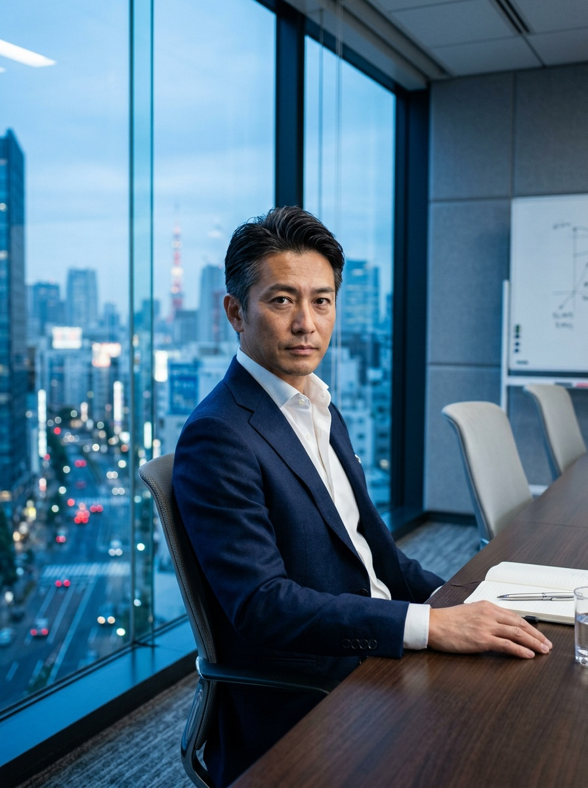

外から提案するのではない。顧客の現場を請け負い、自分たちの責任で回す。
技術と現場の両方に立つPALだからできる、"当事者"の仕事が、ここにある。
現代の物流は「物がないから届けられない」のではなく、情報を処理できないから、物を動かせない時代に入りました。
受注 → 在庫引当 → ピッキング → 出荷 → 配送。この一連の流れは、いまやすべてデータでつながっています。だからこそ、現場を深く理解し、システムと業務の両面から設計できる人材が、これまでにないほど求められている。PALは、その最前線にいます。
モノの流れの生産性を向上させ、
企業と人と街の成長を支える会社です。
SLOGAN ── 物流をコストから、戦略資産に。
社会へイノベーションを持ち込み続ける。これまでの経験や慣習は、一度捨てよう。前例のない領域にこそ、私たちの価値がある。
モノを運ぶとは、人と人のご縁をつないでいくこと。仲間を信じ、チームで成果を出す。その積み重ねが、社会を動かす。
社会を陰日なたとなり支える。目の前の課題に真摯に向き合い、日々の積み重ねと精進を大切にする。プロであり続ける。
物流の世界で、技術と現場の両方を"当事者"として担う会社は、ほとんどありません。だからこそ、PALのポジションは唯一無二です。
技術は持つが、現場は持たない。顧客の現場に導入・提案はするが、その現場を回す当事者ではありません。
現場は持つが、技術は持たない。物流DXが、働く価値として立ち上がってきません。
顧客の現場を請け負い、自分の責任で回す。現場の成果が事業の成果につながるから、物流DXが必然になる。この両立こそPALの最大の独自性です。
FDE（フィールド・デプロイド・エンジニア）は、物流現場に入り込み、業務や課題を理解しながら、システムと現場運用の両面を設計する役割。帳票外・システム外で処理されている"見えない業務"を拾い上げ、平常時の効率化から非常時の切り替えまでを設計します。DXを「絵に描いた餅」で終わらせない、PALの中核ポジションです。
PALの事業は、現場（まわす）を土台に、つくる・つなぐが循環し、その結節点にFDEがいます。なかでもセンター長（現場運営）とFDEは、事業の起点となる中核職種です。新卒も、キャリアも。技術力より人物面を重視して迎えます。
現場起点で、使われ続けるプロダクトを生み出す（DXプロダクト開発本部）。React／TypeScriptを主軸に、活用まで見届ける。
詳しく見る →職種ごとに、段階的にできることを広げていきます。現場から始めて設計へ、実装から事業へ。あなたの専門性を軸に、複数のキャリアが交わっていくのがPALです。
現場（BPO）で培った肌感覚と、エンジニアの実装力。その両方がFDEで交わり、やがて戦略やプロダクトへ広がっていく。職種の壁を越えて経験を掛け合わせられることが、PALのキャリアの強みです。
倉庫のリアルを肌で理解しているからこそ、「本当に動く設計」がつくれる。現場出身のFDEは、PALの大きな武器です。
プロダクトを作る力に、現場を見る目が加わる。コードと現場の両方がわかる人材が、DXを本物にします。
現場×システムを設計してきた経験は、そのまま経営を動かすコンサル・PMの力になる。上流へ越境できます。
職種によって、一日の流れはまったく違います。現場に立つ人も、コードを書く人も、共通するのは「現場とデータをつなぐ」こと。代表的な3職種の一日を覗いてみてください。
現場に入り込み、業務とシステムをつなぐ一日。午前は現場観察、午後は設計とフィードバック。動く現場のリアルが、そのまま設計図になります。
その日訪問する物流現場の稼働状況とデータをダッシュボードで確認。
倉庫に入り、帳票外の運用や例外処理を観察・記録。"見えない業務"を拾う。
観察内容をもとに、代替運用フローや可視化要件をチームで議論。
Core Firstの画面や帳票を現場に合わせて調整、エンジニアと連携。
現場責任者と改善案をすり合わせ、翌日の訓練内容を決める。
気づきをナレッジ化。属人化していた判断を、手順として言語化する。
24時間365日、止めない現場をつくる一日。データで進捗を可視化しながら、優先順位を判断し、次のシフトへつなぐ。運用のプロの現場感覚が武器です。
当日の出荷計画と人員配置を確認、優先順位をチームで共有。
入出庫・ピッキング・検品を管理しながら、進捗をリアルタイムで可視化。
生産性・誤出荷率などの指標をモニタリングし、ボトルネックを特定。
データをもとに動線やレイアウトを見直し、現場に即反映する。
想定外の出荷増や設備停止に、代替運用ルールで冷静に対応。
次シフトへ状況を共有し、日次データを記録。運用を止めない。
プロダクトで、現場の課題を解く一日。FDEやオペレーションから届く"生の要件"を、そのまま機能に。作って終わりではなく、効果をデータで測ります。
チームで進捗と課題を共有し、当日のタスクを確定。
Core First／DTSの機能開発。FDEから届く現場要件を実装に落とし込む。
コードレビューや設計相談で、データ統合の設計をブラッシュアップ。
FDE・オペレーションと連携し、リリース内容を現場目線で検証。
改善をリリースし、効果をデータで計測。次の打ち手を検討する。
新技術の実証やAI活用のキャッチアップ。次の一歩の準備。
裁量も、挑戦も、物流DXも、それ単独では、どこの会社でも聞く言葉です。"現場を請け負う当事者"だからこそ語れる——それがPALの言葉です。
外から物流DXを提案する会社ではありません。顧客の現場を請け負い、自分たちの責任で回す。だからこそ、机上で終わらない本物の課題と成果に向き合えます。
"アットホーム"で群れる組織ではありません。上下や勤続年数で判断されない。互いを個として尊重し合う土台があるから、誰もが対等に挑戦できます。
現場の外から提案するのではなく、自分たちが物流現場に立ち、データ・AIの力で変えていく。技術と現場、その両方を持つのはPALだけの独自性です。
職種を問わず、活躍している人に共通する構えとスキルがあります。そのすべての土台にあるのが、たった一つの前提です。
物事を俯瞰し、本質・構造で掴める。多くの変数を同時に理解し、抽象化して考えられる。
入社時の高いITスキルは不要。自ら学び、使おうとする姿勢を重視します。
相手に伝わる言葉で伝え、周囲を巻き込み、信頼を築ける。
完璧な計画より、仮説を立て試す。失敗を恐れず挑戦できる。
受け身でなく、自ら課題を見つけて解決策をセットで考える。
これからの可能性を信じ、前向きに描き、楽しめる。
環境や方針が変わっても前向きに受け止め、柔軟に対応できる。
好奇心ドリブンで学び続け、自分の関心・興味を起点に動ける。
見返りを求めず経験・機会を人に与え、現場・人に平等に向き合う。
「いまのPAL」だけでなく「これからのPAL」も。事業は物流会社から、物流インフラを創る会社へ——その進化と規模の拡大が、同時に進んでいます。
※ 増員計画は戦略上の目標値です。その他の数値は採用サイトのイメージを含みます。
物流の現場からキャリア入社した人も、新卒でFDEに挑む人も。多様なバックグラウンドが、PALの強さです。
倉庫の現場責任者からFDEへ。仕様書に載らない判断こそ、DXの鍵だと知りました。
Core Firstの開発に携わり、経営と現場をつなぐ実感を毎日得ています。

お客様の経営そのものを動かす手応え。ここには一気通貫のやりがいがあります。
本サイトよりマイページ登録。
まずは相互理解から。
現場・経営との複数回面接。
役員面接で相互に見極め。
次の未来を、一緒に。
新卒・キャリアともに通年で募集しています。各職種をタップで詳細を開けます。
※ 既存顧客深耕・新規営業（BizDev）・マーケティング・コーポレートも通年で募集しています。記載の条件はサンプルです。